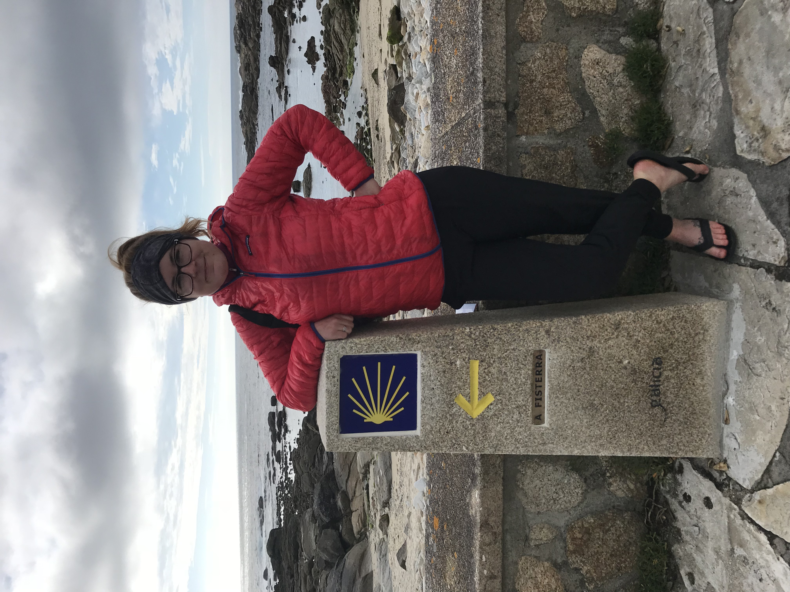

⚬ About Me ⚬
Hi! My name is Jenny Sacco.
Best described as an organized, curious minded, creative, helper.
I live in West Tacoma, WA with my wonderful FireFighter/Paramedic husband and two fluffy mini Austrailian Shepards.
I've worn a various hats throughout my lifetime: 9 years of Private Banking at Merrill Lynch, "little ripper" snowboarding instructor at Mount Bachelor, Assistant Teacher at a wonderful Montessori school in Bellevue, WA, and operations at the only hostel in Bend, OR.
In 2017, I walked 900km across the country of Spain over the span of 45 days. Link of "The Way": The Camino De Santiago
Since 2019, I've proudly served my community as a Fire Dispatcher for Pierce County.
As of May 2022, I completed a web development/coding bootcamp through the University of Washington. I designed and built this website that you are reading through right now.
My cleaning adventures offically began in Dec 2021. I now own and operate this small house cleaning business named Forrest Green Cleaning, LLC and I'm having so much fun.
No job is too big or too small. The challenge of finding new ways to be more efficient excites me. I've always wanted to work with my hands and feel so lucky to be able to connect my passion and my work!
When I am not cleaning your house, RV, closet or buzzing around town, you can find me out walking our dogs, reading a good book, or driving my husband crazy by reorganizing another cabinet.
